Kapsalon in Aalten, voor jong en oud
Ga zitten.
Voel je thuis.
Yellow 7 is een soort tweede huiskamer. We bespreken samen wat je wilt, nemen er de tijd voor en jij gaat blij naar huis.
4,8 uit 52 Google-reviews
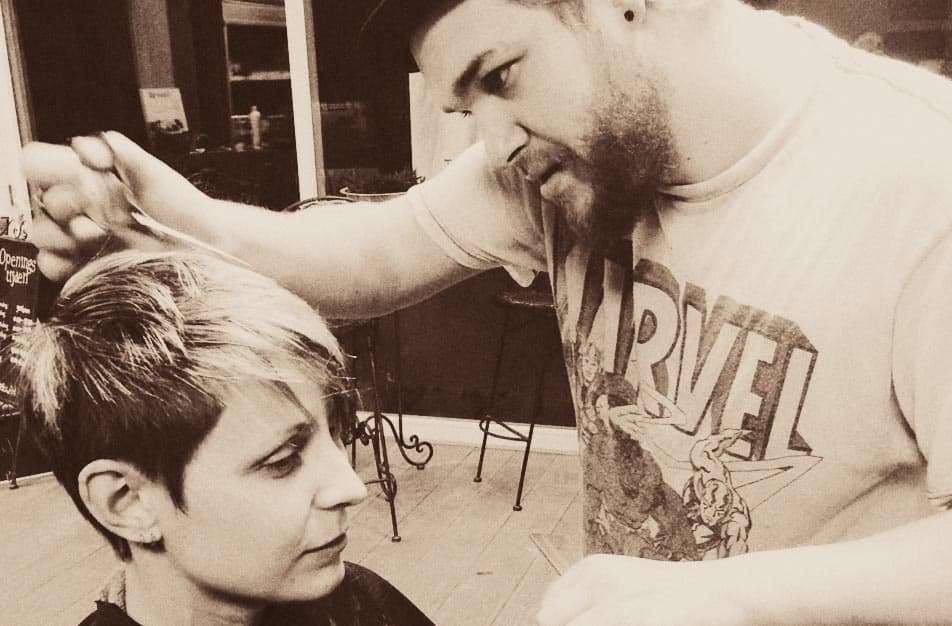
“Yellow 7 biedt net iets meer.”
Het moet een soort tweede huiskamer zijn. Een leuke, creatieve, maar vooral gezellige salon waar je binnenloopt en je meteen op je gemak voelt.
Als je bij mij komt, bespreken we eerst samen wat je wilt. Weet je het nog niet precies? Dan denk ik met je mee tot het klopt. Geen haast en geen lopende band: de salon moet zo laagdrempelig mogelijk zijn.
Dat geldt voor jong en oud. Van een eerste knipbeurt tot een felgekleurde pluk, van een strakke baard tot een opgestoken vlecht.
Graag tot ziens bij Yellow 7.
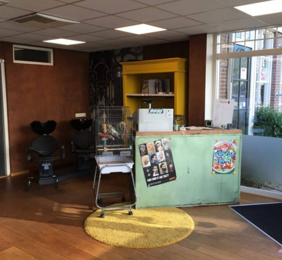
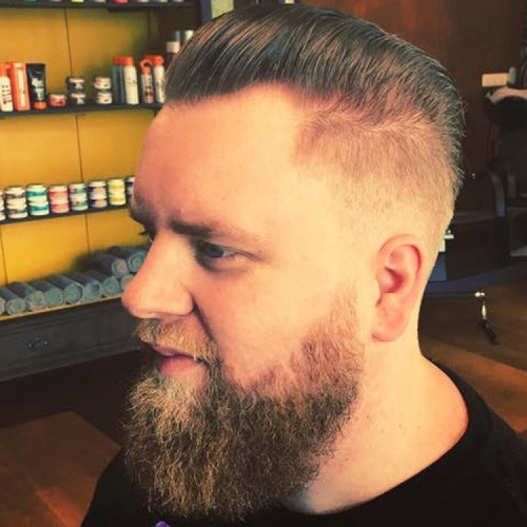
Wat het kost
Een greep uit de prijslijst. Kies je behandeling en tijd direct in de online agenda.
Eerste keer kleuren bij ons?
Maak die afspraak dan even telefonisch, dan bespreken we samen wat er nodig is.
Bel 0543 470 470Knippen
- Dames: wassen, knippen, drogen€ 37,95
- Heren: wassen, knippen, drogen€ 37,95
- Extra, voor dik of krullend haar€ 72,95
- Kids t/m 10 jaar€ 21,95
- Tieners t/m 16 jaar€ 25,95
- Zijkantjes of buzzcut€ 21,50
- Baard bijwerken€ 27,50
Kleuren
- Kleuren kortv.a. € 49,50
- Blonderen kortv.a. € 64,50
- Balayage of ombrev.a. € 92,50
- Highlights hele hoofdv.a. € 99,50
- Toner kort haar€ 42,50
- Kids: gekleurde pluk€ 24,50
Stylen, combinaties en permanent
Föhnen of stylenv.a. € 16,00
Heren + baard bijwerken€ 65,00
Knippen + föhnen of stijltang€ 52,95
Permanent kort + knippen€ 109,00
Van strakke fade tot regenboog.
Nieuw, leuk en creatief, voor jong en oud. Een paar kapsels die de stoel van Yellow 7 verlieten.
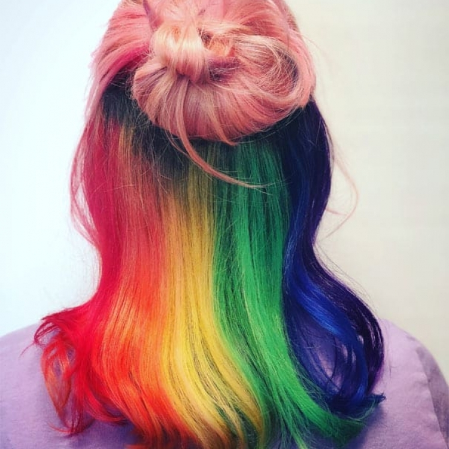
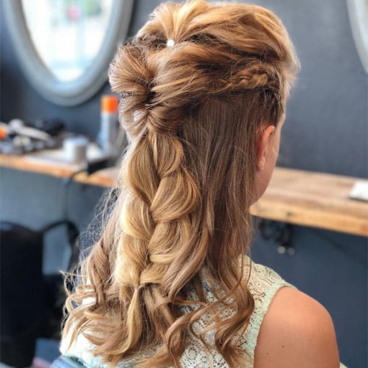
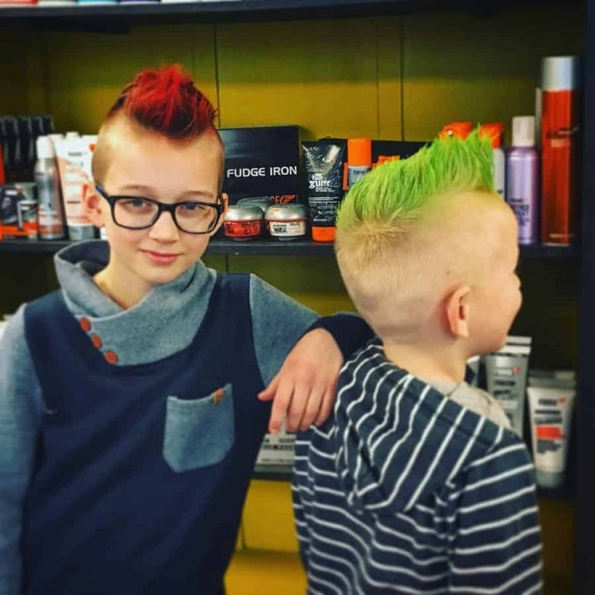
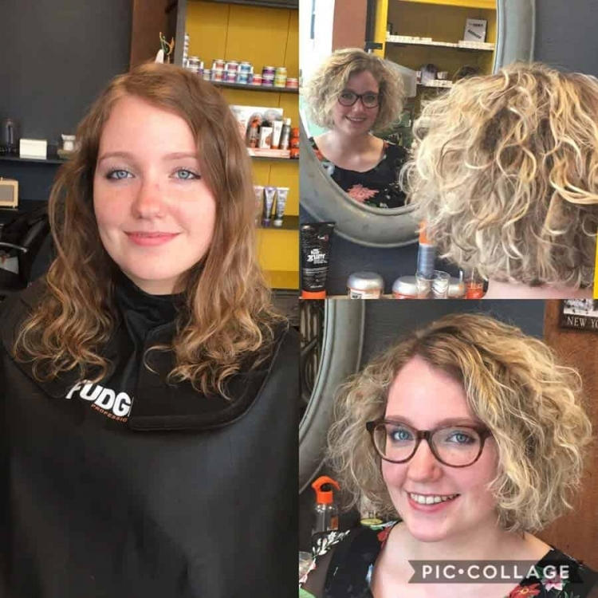
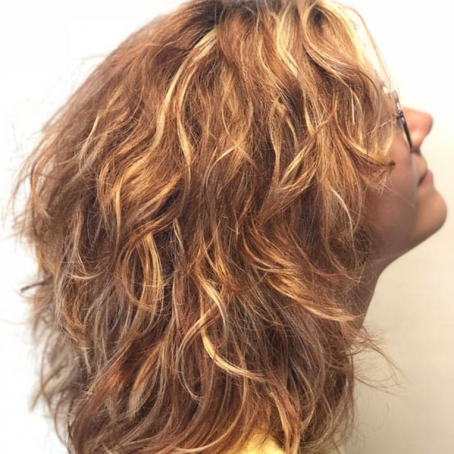
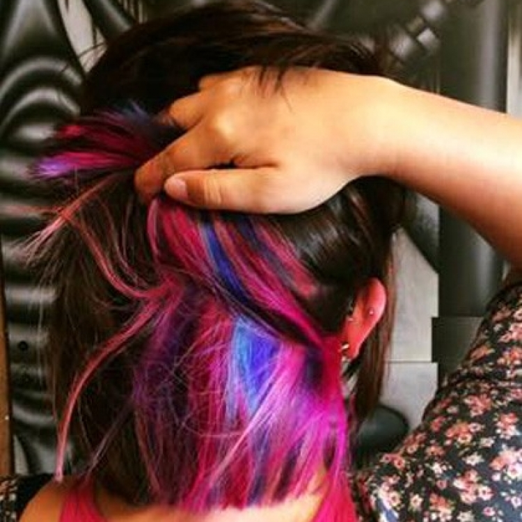
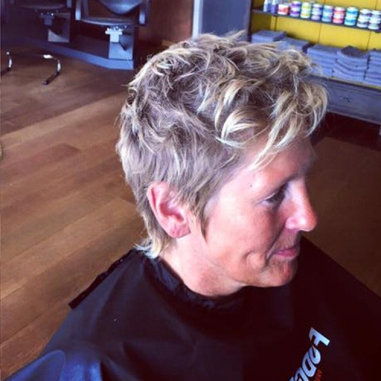
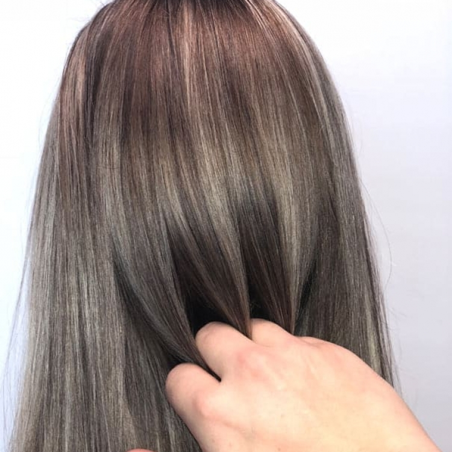
Weet je nog niet wat je wilt? Plan een adviesgesprek, dan zoeken we het samen uit.
Adviesgesprek plannenWat klanten erover zeggen
4,8 uit 52 reviews op Google
“Na dat mijn haarkleur verprutst is ergens anders, was Mitchel mijn redder in nood!! Hij heeft mijn haar gefixt en ik ben er SUPER blij mee!!”
“Een fijne kapper, die zijn tijd voor je neemt. Het is duidelijk geen productie werk, kwaliteit boven kwantiteit!”
“Een super goede kapper die met je meedenkt, super klantgericht is en je voelt je er direct thuis. Echt een aanrader!!!!!”
“Beste kapper van Aalten voor jong en oud. Je gaat je er thuis voelen en je hebt nooit spijt dat je gegaan bent en daardoor elke keer terug gaat. vak werk 💪”
“Met een woord SUPER!!! Ik kan iedereen deze kapper aanraden. Wat zijn werk betreft is hij is zeer vakkundig, je kan merken dat hij veel ervaring heeft, en ook van zijn werk houdt, hij neemt echt zijn tijd voor je, luistert naar je wensen …”
Kom gezellig langs.
Op de Lichtenvoordsestraatweg in Aalten. Op vrijdag kun je tot 's avonds negen uur terecht.
Yellow 7
Lichtenvoordsestraatweg 7
7121 AA Aalten
Openingstijden
- Maandag
- Gesloten
- Dinsdag
- 10:00 tot 18:00
- Woensdag
- 10:00 tot 19:00
- Donderdag
- 10:00 tot 18:00
- Vrijdag
- 10:00 tot 21:00
- Zaterdag
- 09:00 tot 17:00
- Zondag
- Gesloten